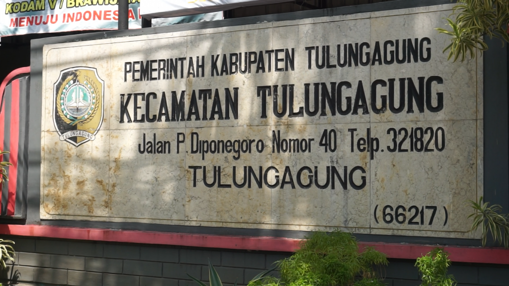
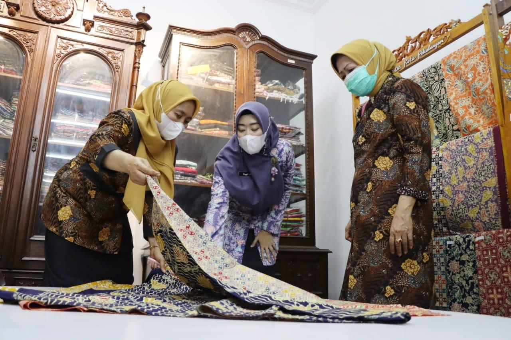
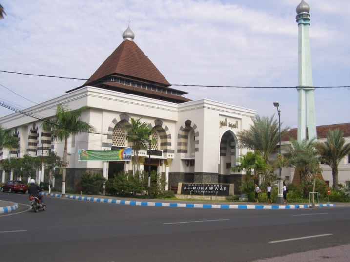
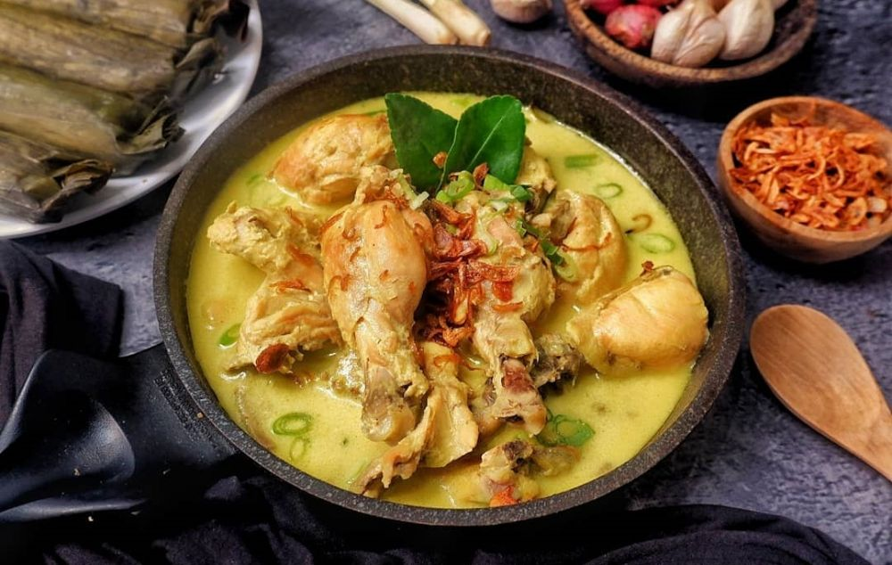
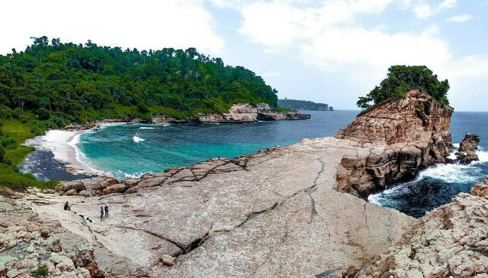
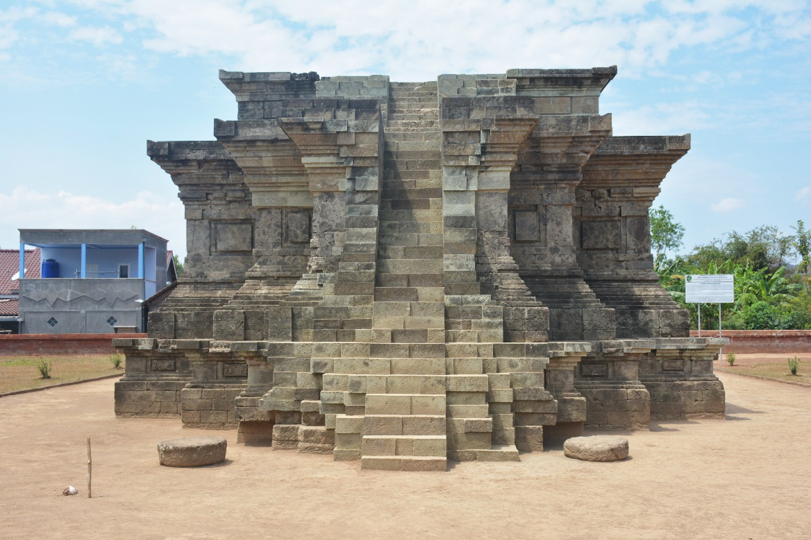

Sejarah

Pada 1205 Masehi, masyarakat Thani Lawadan di selatan Tulungagung, mendapatkan penghargaan dari Raja Daha terakhir, Kertajaya, atas kesetiaan mereka kepada Raja ketika terjadi serangan musuh dari timur Daha. Penghargaan tersebut tercatat dalam Prasasti Lawadan dengan candra sengkala "Sukra Suklapaksa Mangga Siramasa" yang menunjuk tanggal 18 November 1205 M. Tanggal keluarnya prasasti tersebut akhirnya dijadikan sebagai hari jadi Kabupaten Tulungagung sejak tahun 2003. Di Desa Boyolangu, terdapat Candi Gayatri. Candi ini adalah tempat untuk mencandikan Gayatri (Sri Rajapatni), istri keempat Raja Majapahit yang pertama, Raden Wijaya (Kertarajasa Jayawardhana), dan merupakan ibu dari Ratu Majapahit ketiga, Sri Gitarja (Tribhuwanatunggadewi), sekaligus nenek dari Hayam Wuruk (Rajasanegara), raja yang memerintah Kerajaan Majapahit pada masa keemasannya. Nama Boyolangu itu sendiri tercantum dalam Kitab Nagarakertagama yang menyebutkan nama Bayalangu/Bhayalango (bhaya = bahaya, alang = penghalang) sebagai tempat untuk menyucikan dia.
Berikut ini adalah kutipan Kitab Negarakertagama yang ditulis oleh Mpu Prapanca dan telah diterjemahkan ke dalam Bahasa Indonesia:
Prajnyaparamitapuri itulah nama candi makam yang dibangun
Arca Sri Padukapatni diberkati oleh Sang Pendeta Jnyanawidi
Telah lanjut usia, paham akan tantra, menghimpun ilmu agama
Laksana titisan Empu Barada, menggembirakan hati Baginda
(Pupuh LXIX, Bait 1)
Di Bayalangu akan dibangun pula candi makam Sri Rajapatni
Pendeta Jnyanawidi lagi yang ditugaskan memberkati tanahnya
Rencananya telah disetujui oleh sang menteri demung Boja
Wisesapura namanya, jika candi sudah sempurna dibangun
(Pupuh LXIX, Bait 2)
Makam rani: Kamal Padak, Segala, Simping
Sri Ranggapura serta candi Budi Kuncir
Bangunan baru Prajnyaparamitapuri
Di Bayalangu yang baru saja dibangun
(Pupuh LXXIV, Bait 1)
Industri

Tulungagung terkenal sebagai salah satu penghasil marmer terbesar di Indonesia, yang bersumber di bagian selatan Tulungagung. Tulungagung juga termasuk salah satu pusat industri marmer di Indonesia, dan terpusat di selatan Tulungagung, terutama di Kecamatan Campurdarat, yang di dalamnya banyak terdapat perajin marmer,sayangnya saat ini marmer kualitas terbaik sudah habis. Aset marmer dari Tulungagung telah menembus pasar internasional. Di daerah yang sama, juga terdapat industri onyx yang mempunyai kualitas mirip marmer.
Selain industri marmer, di Tulungagung juga tumbuh dan berkembang berbagai industri kecil dan menengah antara lain memproduksi alat-alat/perkakas rumah tangga, batik, dan konfeksi termasuk bordir. Beberapa batik yang terkenal di Tulungagung diantaranya Batik Tulungagung (sangat minim), Batik Satriomanah, dan sebagainya. Di Kecamatan Ngunut terdapat industri peralatan Tentara seperti tas ransel, sabuk, seragam,tenda dan makanan ringan seperti kacang atom. Di Kecamatan Ngunut juga terdapat industri batu bata dan genteng yang berkualitas. Di kelurahan sembung juga di kenal sebagai pusat industri kerupuk rambak. Sedangkan di bagian pegunungan utara, yakni Kecamatan Sendang terdapat perusahaan air susu sapi perah dan teh. Industri perikanan, dan gula merah juga Tulungagung juga tidak kalah, ini telah dikenal secara nasional. salah satunya Pabrik Gula Modjopanggung di Kecamatan Kauman.
Geografis

Kabupaten Tulungagung terletak pada ketinggian 85 m di atas permukaan laut (dpl). Bagian barat laut Kabupaten Tulungagung merupakan daerah pegunungan yang merupakan bagian dari pegunungan Wilis-Liman. Bagian tengah adalah dataran rendah, sedangkan bagian selatan adalah pegunungan yang merupakan rangkaian dari Pegunungan Kidul. Di sebelah barat laut Tulungagung, tepatnya di Kecamatan Sendang, terdapat Gunung Wilis sebagai titik tertinggi di Kabupaten Tulungagung yang memiliki ketinggian 2552 m. Di tengah Kota Tulungagung
Di tengah Kota Tulungagung, terdapat Kali Ngrowo yang merupakan anak Kali Brantas dan seolah membagi Kota Tulungagung menjadi dua bagian: utara dan selatan. Kali ini sering disebut dengan Kali Parit Raya dari rangkaian Kali Parit Agung.
Wisata
Selain menjadi kota Marmer, Kabupaten Tulungagung juga dikenal dengan kota kopi atau cethe karena kebiasaan masyarakatnya yang suka akan hal kopi terutama iconic dengan kopi ijo waris, dan juga Kabupaten Tulungagung mempunyai banyak Wisata.
Wisata Kuliner

Nasi Lodho Tulungagung, sebenarnya kuliner ini mirip dengan kare ayam, hanya saja ayamnya dipanggang/diasap terlebih dulu dan disajikan bersama nasi/tiwul (tiwul adalah nasi yang terbuat dari gaplek/singkong) dengan pelengkap gudhangan (kudapan) sayur-sayuran, namun dalam perkembangannya lebih banyak yang disajikan (warung kaki lima) serupa dengan kare ayam. Lodho Tulungagung dibedakan dalam 2 genre,yaitu Lodho kuah kental dan encer, kekentalannya berasal dari konsentrasi santan, biasanya rasanya pedas,ayamnya ayam kampung.
Wisata Pantai

Kabupaten Tulungagung diuntungkan dengan letak geografis yang berada di tepi Samudera Hindia, sehingga memiliki banyak pantai yang menarik untuk dikunjungi diantaranya Pantai Popoh, Pantai Sidem, Pantai Brumbun, Pantai Sine, Pantai Molang, Pantai Klatak, Pantai Gerangan, Pantai Sanggar, Pantai Gemah, Pantai Ngalur, Pantai Coro, Pantai Pacar, Pantai Lumbung, Pantai Dlodo, Pantai Pathok Gebang dan Pantai Kedung Tumpang.
Wisata Candi

Selain itu Tulungagung juga mempunyai Beberapa Bangunan Candi yang tersebar di beberapa tempat, yaitu Candi Dadi yang terletak di Puncak bukit di Desa Sanggrahan Kecamatan Boyolangu, Candi Cungkup (Candi Sanggrahan) yang terletak di Desa Sanggrahan Kecamatan Boyolangu, Candi Gayatri (Boyolangu) yang terletak di Kecamatan Boyolangu, Candi Mirigambar terletak di Kecamatan sumbergempol, Candi Bodho terletak di Kecamatan Kalidawir, Candi Penampihan berada di Lereng Gunung Wilis Kecamatan Sendang. Di selatan Tulungagung tepatnya di Kecamatan Campurdarat sebuah Telaga yang bernama Telaga Buret, telaga ini tak pernah kering walaupun letaknya di Perbukitan kapur selatan yang terkenal kering dan panas saat musim kemarau datang. Arca Joko Budhek, adalah sebentuk batu yang ukurannya besar yang bentuknya seperti seorang pria yang bertapa,arca ini berada di puncakbukit, dan bisa dilihat dari jalan raya karena ukurannya yang besar.